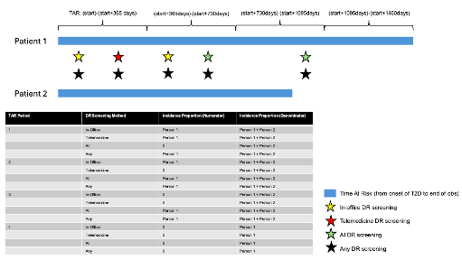

| GDE | Guideline Driven Evidence |
| OHDSI | Observational Health Data Sciences and Informatics |
| HADES | Health Analytics Data-to-Evidence Suite |
| T2D | Type 2 diabetes |
| DR | diabetic retinopathy |
| DME | diabetic macular edema |
| AI | artificial intelligence |
| CCI | Charlson Comorbidity Index |
| DCSI | Diabetes Complications Severity Index |
| Investigator | Institution/Affiliation |
|---|---|
| Paul Nagy | Department of Biomedical Informatics and Data Science, Johns Hopkins University, Baltimore, MD, USA |
| Erik Westlund | Department of Biostatistics, Johns Hopkins University, Baltimore, MD, USA |
| Benjamin Martin | Department of Biomedical Informatics and Data Science, Johns Hopkins University, Baltimore, MD, USA |
| Haeun Lee | Department of Biomedical Informatics and Data Science, Johns Hopkins University, Baltimore, MD, USA |
| Tran Diep | Wilmer Eye Institute, Johns Hopkins Hospital, Baltimore, MD, USA |
| Cindy Cai * | Wilmer Eye Institute, Johns Hopkins Hospital, Baltimore, MD, USA |
| * Principal Investigator |
This study is undertaken within Observational Health Data Sciences and Informatics (OHDSI), an open collaboration.CC
Background: Diabetic retinopathy (DR) screening is critical for the prevention of vision loss among patients with diabetes. With expanding technology, DR screening can now occur both in-office and via telemedicine and autonomous artificial intelligence (AI). Despite rapid advances in DR screening technologies, real-world evidence on their adoption and use remains limited.
Purpose: To characterize the current landscape of the 3 types of DR screening (in-office, telemedicine, AI)
Design: Retrospective characterization study across the OHDSI Evidence Network.
Subjects: Adults (≥18 years) with prevalent and incident type 2 diabetes (T2D) in the study period from 1/1/2021 to 12/31/2024 will be included.
Methods: We will compare the baseline characteristics of patients who receive each form of DR screening, calculate the annual proportion of patients with T2D who undergo each form of DR screening, compare the time from T2D diagnosis to initial DR screening by each of the 3 modalities, and finally characterize the sequence of DR screening by modality in the 3 years after T2D diagnosis.
Conclusions: Characterizing the current landscape of DR screening will highlight opportunities to expand screening, particularly the newer AI technology, to ultimately reduce vision loss.
| Number | Date | Section of study protocol | Amendment or update | Reason |
|---|---|---|---|---|
| 1 | 16-April-2025 | Milestones | Update | Protocol is more updated than Specific Aims and Clinical Description files located in the Teams environment |
| 2 | 22-April-2025 | Analysis | Amendment | Finalized the phenotypes that are needed for each analysis |
| Milestone | Planned / actual date |
|---|---|
| Protocol registration | 01-April-2025 / 16-April-2025 |
| Start of analysis | 17-April-2025 |
| End of analysis | |
| Results presentation |
Diabetic retinopathy is the leading cause of vision loss among working-age adults in the U.S. and is expected to affect upwards of 16.0 million patients by 2050.1 Both the American Diabetes Association and Academic of Ophthalmology recommend diabetic retinopathy screening at the time of receiving a type 2 diabetes diagnosis.2,3 However, adherence to guidelines in the real-world are low, ranging from 15% to 77%.4–7 Appropriate screening and timely treatment can reduce the risk of blindness by over 90%.8
Over the years, there have been major advances in methods available to perform diabetic retinopathy screening.3 Traditional diabetic retinopathy screening involves in-office examinations with a board-certified optometrist or ophthalmologist. More recently, remote screening can be performed with telemedicine.9 Typically, a staff member takes a fundus photo of the retina, and a certified physician (typically ophthalmologist) reads the images remotely. Even more recently, the FDA has approved artificial intelligence (AI) algorithms to independently diagnose diabetic retinopathy without physician oversight.10 Both telemedicine and AI DR screening offer the potential to dramatically improve screening rates by reducing the barriers to screening.11 However, it is unclear if these newer methods of screening are reaching the populations that need them the most, for example rural or minority populations.
The purpose of this study is to characterize the current landscape of diabetic retinopathy screening and to compare the populations that undergo the 3 types of DR screening (in-office, telemedicine, AI). We will focus on the study period 1/2021 and beyond since the AI screening with its own dedicated current procedural terminology (CPT) code was not available until then. Results from this OHDSI study can inform current usage of DR screening and opportunities for future growth of these vision saving technologies.
Compare the baseline characteristics of patients with type 2 diabetes (both prevalent and incident) who were screened for diabetic retinopathy using one of three modalities: in-office, telemedicine, or AI-based screening.
Characterize the annual proportion of patients who undergo diabetic retinopathy screening (in-office, telemedicine, AI) among patients with type 2 diabetes (both prevalent and incident).
Compare the time to initial diabetic retinopathy screening between the 3 modalities (in-office, telemedicine, AI) among patients with incident type 2 diabetes.
Characterize the sequence of diabetic retinopathy screening (in-office, telemedicine, AI) in the 3 years after type 2 diabetes diagnosis (both prevalent and incident)
This will be a retrospective cohort study of databases in the OHDSI Evidence Network. Only databases that pass data diagnostics and contain the relevant concept sets and visit types will be invited to participate.
Adults (≥18 years) with pre-existing (“prevalent”) and newly diagnosed (“incident”) type 2 diabetes (T2D) diagnosed during the study period from 1/1/2021 to 12/31/2024 will be included for analysis. We will focus on patients with T2D because the diabetic retinopathy (DR) screening guidelines for patients differ for those with type 2 versus type 1 diabetes.3 The study dates were chosen because the current procedural terminology (CPT) code for autonomous artificial intelligence (AI) DR screening was not available and reimbursed by Medicare until 1/2021.10 (Appendix of Cohort Definitions)
The outcomes of interest are three forms of DR screening including: 1) in-office, 2) telemedicine, and 3) autonomous AI. We will include 2 variations of the in-office screening phenotype [1A) in-office screening (requires provider specialty), 1B) in-office screening (does not require provider specialty)] to account for the possibility that some databases will not have provider specialty mapped (see Appendix of Cohort Definitions).
We will include 2 versions of each outcome, ‘all cases’ and ‘first type’, to reflect patients with slightly different outcomes. Patients with ‘all cases’ of a DR screening type represents patients who have ever had, for example AI DR screening. Patients with ‘first type’ of a DR screening type represents patients who had that type of DR screening first, for example someone who had AI DR screening without having received prior in-office or telemedicine screening.
Baseline characteristics include age group and mean, sex, race/ethnicity, ophthalmic characteristics (severity of diabetic retinopathy), other ophthalmic diseases (cataracts, glaucoma), and medical complexity (CCI/DCSI) among others will be examined.
Various standardized analytics available in the OHDSI Community will be used to conduct this Characterization study.13 The Strategus pipeline will be used to call the following Health Analytics Data-to-Evidence Suite (HADES) packages14: Characterization, CohortIncidence, and TreatmentPatterns. R package dependencies will be versioned using the renv R package. Source code will be versioned using git and stored in the study GitHub repository.
Cohort Diagnostics
The CohortDiagnostics package will be executed for all indication and outcome cohorts to evaluate quality of developed phenotypes. This will be an iterative process as outlined by the Phenotype Development group within the OHDSI Community.16 It was through this process that we identified variations in the mapping for provider specialty across databases and made the decision to create two phenotypes for in-office DR screening, one that required a provider specialty of optometry or ophthalmology in addition to a list of procedures, and that one that did not require a provider specialty. (see Appendix of Cohort Definitions)
Cohort Features
The Characterization package will be used to extract the features of patients with prevalent and incident T2D (the two Indication cohorts) who were screened using each DR screening method (Outcomes). These features will include demographic data (age group/mean, sex, race, ethnicity), prior conditions/drug exposures/procedures/measurements/devices/observations, and risk scores (e.g., Charlson comorbidity index, DCSI, CHADS2VASC score). We will also extract aggregated features including ‘treatment-requiring DR/diabetic macular edema (DME) (including vitrectomy)’ which will include the standard concepts noted in the Appendix. These features reflect the characteristics of the patients at time of entry into the Indication cohort stratified by whether or not they have an outcome.
We will specify:
Incidence Rates
The CohortIncidence package will be used to calculate the incidence proportion of patients in each indication cohort who received each type of DR screening. Incidence proportion is defined as the number of distinct people with at least 1 case divided by the number of distinct people who have at least 1 day at risk (persons with cases / persons at risk).17 Time-at-risk will begin with cohort entry into the indication cohort (e.g., first known instance of incident or prevalent T2D) until all time after (this should correspond to an analysis of “intent to treat” rather than “on-treatment”). Since we are interested in reporting the annual incidence of DR screening (e.g., in each year since T2D diagnosis, what proportion of patients receive each type of DR screening), we will have the following time-at-risk options: (start)-(start+365 days), (start+365days)-(start+730days), (start+730days)-(start+1095days), (start+1095days)-(start+1460days).
The figure below demonstrates how incidence proportion is calculated for 2 sample patients with T2D. Brackets represent the four time-at-risk windows since T2D diagnosis. The stars represent the occurrence of an outcome (DR screening) over time and the black star denotes the presence of any DR screening (either in-office, telemedicine, or AI). The calculation for incidence proportion for each time-at-risk window for each DR screening method is shown in the table.
 Time-to-Event
The time from incident T2D to each type of DR screening will be calculated using the Characterization package in HADES. The Characterization package classifies the timing of the outcome in relation to the exposure (in this case a diagnosis of incident T2D) into various types.18 For this analysis, the timing of the outcome after the first target cohort exposure (or “during first”) is of most interest.
The time-to-event analysis will be performed for both the ‘all types’ and ‘first type’ versions of each DR screening outcome. The time-to-event analysis to the first DR screening in the ‘all types’ version of the outcome reflects, for example, the first time to AI screening even if the patient had received prior in-office screening. The time-to-event analysis to the first DR screening in the ‘first type’ version of the outcome reflects, for example, the first time to AI screening only if the patient did not have prior in-office or telemedicine screening.
Treatment Pathways
The TreatmentPatterns package will be used to identify the sequence of DR screening (in-office v telemedicine v AI) in the 3 years after T2D diagnosis among patients with prevalent and incident T2D. Only patients with 3 years of continuous observation will be included in this analysis. (See Appendix of Cohort Definitions)
A total of 4 sets of TreatmentPatterns analyses will be run to account for the 2 indications (prevalent and incident T2D) and 2 versions of the in-office DR screening outcome. We will employ the following design choices for the analyses.
When complete, this study will provide one of the largest characterizations of patients who have received three potential forms of DR screening. Its limitations are its retrospective nature, and potential measurement errors in the capture of in-office DR screening.
Each participating institution will seek IRB approval for this study as dictated by local governance.
The results will be shared and discussed among the study participants and broader OHDSI community during the weekly Tuesday community calls. This work will be presented at conferences (OHDSI Global Symposium and/or ARVO) and published as a manuscript.
| Phenotype Name | Definition | Type | R Package Used For |
|---|---|---|---|
| Newly diagnosed T2DM |
Index Event: (earliest event) • Condition of T2DM • Med (including insulin) • A1c between 6.5-30% or 48-99 millimole per mole Inclusion Criteria: • No T1DM prior to T2DM diagnosis • No secondary prior to T2DM diagnosis • At least 1 T2DM on or within 365 days of index • 180 day look back period • ≥18 years End of continuous observation |
I | Characterization, CohortIncidence |
| Newly diagnosed T2DM (3 years continuous observation) | Same as above, but also require 3 year observation period after index date | I | TreatmentPatterns |
| Prevalent T2DM |
Index Event: (all events) • Condition of T2DM • Med (including insulin) • A1c between 6.5-30% or 48-99 millimole per mole Inclusion Criteria: • No T1DM prior to T2DM diagnosis • No secondary prior to T2DM diagnosis • At least 1 T2DM on or within 365 days of index • ≥18 years End of continuous observation |
I | Characterization, CohortIncidence |
| Prevalent T2DM (3 years continuous observation) | Same as above, but also require 3 year observation period after index date | I | TreatmentPatterns |
| DR Screening in-office |
Index Event: (all events) • Outpatient Visit Inclusion Criteria: (all events) • eye screening and measurements • specialist of provider optometry or ophthalmology End date: 0 days |
O | Characterization, CohortIncidence, TreatmentPatterns |
| DR Screening in-office (first type) |
Same as above • Excludes prior telemedicine or AI |
O | Characterization, CohortIncidence |
| DR Screening in-office (no specialty) |
Index Event: (all events) • Outpatient Visit Inclusion Criteria: (all events) • eye screening and measurements End date: 0 days |
O | Characterization, CohortIncidence, TreatmentPatterns |
| DR Screening in-office (no specialty) (first type) |
Same as above • Excludes prior telemedicine or AI |
O | Characterization, CohortIncidence |
| DR Screening telemedicine |
Index Event: (all events) • Procedure Telemedicine (CPT 92227 and 92228) Inclusion Criteria: (all events) End date: 0 days |
O | Characterization, CohortIncidence, TreatmentPatterns |
| DR Screening telemedicine (first type, excludes in-office with specialty) |
Same as above • Excludes prior in-office (with provider specialty) or AI |
O | Characterization, CohortIncidence |
| DR Screening telemedicine (first type, excludes in-office without specialty) |
Same as above • Excludes prior in-office (without provider specialty) or AI |
O | Characterization, CohortIncidence |
| DR Screening AI |
Index Event: (all events) • Procedure Telemedicine (CPT 92229) Inclusion Criteria: (all events) End date: 0 days |
O | Characterization, CohortIncidence, TreatmentPatterns |
| DR Screening AI (first type, excludes in-office with specialty) |
Same as above • Excludes prior in-office (with provider specialty) or telemedicine |
O | Characterization, CohortIncidence |
| DR Screening AI (first type, excludes in-office without specialty) |
Same as above • Excludes prior in-office (without provider specialty) or telemedicine |
O | Characterization, CohortIncidence |
| DR Screening any | Any type of DR screening (uses the in-office definition that requires a provider specialty) | O | CohortIncidence |
| DR Screening any (no specialty) | Any type of DR screening (uses the in-office definition that does not require a provider specialty) | O | CohortIncidence |
| * I = Indication, O = Outcome |
rmarkdown::render(“Protocol.Rmd”, output_format = “html_document”)